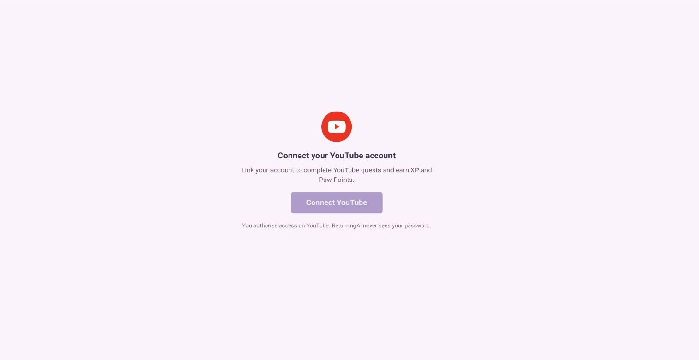
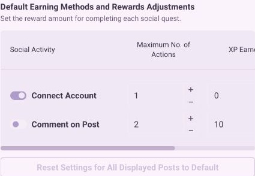
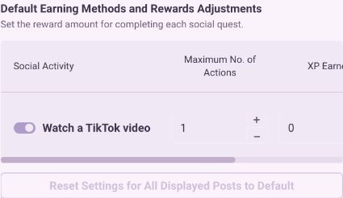
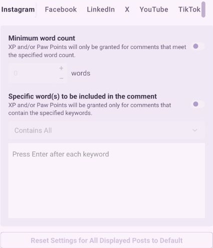

External identity / verification / recovery
An action elsewhere.
A clear result here.
Social Quests connect an external action to a community reward. The experience has to explain account connection, what counts, verification, pending results and recovery when the provider cannot confirm the action.

Integration product specification, including TikTok sandbox MVP and verification/recovery states. Current staging rules and member connection screens are shown below.
Archived specifications + observed CatTrader connection screens
Connect → perform action → verify → reconcile reward
Feature flow
The connection is the prerequisite, not the completion.
- 01
Connect the relevant account
The member authorizes the provider connection. Disconnected and expired connections need distinct guidance.
- 02
Understand and perform the action
The quest identifies the supported action and any video, hashtag or campaign-window requirements.
- 03
Verify the action
Verification distinguishes pending, no match, connection expiry and a provider error.
- 04
Reconcile the reward
The specified completion flow handles repeat verification and duplicate rewards rather than treating every retry as a new success.
Explore the product logic
Make uncertainty actionable.
This walkthrough is based on the archived integration specification. It illustrates distinct outcomes without connecting an account, calling a provider or completing a quest.
Local illustration · synthetic examples · no account, reward or configuration changes.
Actual product / read-only
The prerequisite is visible before authorization.

Embed availability
The delivery surface has a clear boundary.
No Socials widget is saved in CatTrader. The member connection screen is captured above; the local state walkthrough below explains the specified verification flow.
Integration design
Use a shared account model, with provider-specific rules.
- Reuse the existing pattern
- The TikTok specification extends the social-service architecture and account-card pattern instead of inventing a parallel product.
- Separate failure reasons
- Popup cancellation, expired connection, no matching action and provider failure call for different recovery copy.
- Preserve reward integrity
- Verification, cooldown, duplicate prevention and reward reconciliation are explicit parts of the specification.
- Status boundary
- The preserved tasks establish completed design. They do not establish provider approval, implementation or production release.
The working feature / staging evidence
The provider defines what can be rewarded.
Current administrator screens show the configured earning methods and comment criteria. These are working staging surfaces; the historical TikTok specification describes a broader design exploration.



Evidence and limits
Read the artifacts at their actual strength.
Design intent and screen hierarchy.
The visible state at capture time.
Deterministic explanation of documented rules.
Source gaps and integration limits
No Socials widget is saved in CatTrader. An exact Figma frame for Social Quests remains missing. Account connection and provider verification were not executed.
Feature walkthrough · updated 12 October 2026. Screens and source records are curated for explanation; no unverified adoption or business-impact claim is made.